Monitoring the Streaming Integrator¶
The Status Dashboard allows you to monitor the metrics of a stand-alone Streaming Integrator instance or a Streaming Integrator cluster. This involves monitoring whether all processes of the Streaming Integrator setup are working in a healthy manner, monitoring the current status of a Streaming Integrator node, and viewing metrics relating to the history of a node or the cluster. Both JVM level metrics or Siddhi application level metrics can be viewed from the Status Dashboard.
The following sections cover how to configure the Status Dashboard and analyze statistics relating to your Streaming Integrator deployment in it.
Configuring the Status Dashboard¶
The following sections cover the configurations that need to be done in order to view statistics relating to the performance of your Streaming Integrator deployment in the Status Dashboard.
Assigning unique carbon IDs to nodes¶
Carbon metrics uses the carbon ID as the source ID for metrics.
Therefore, all the worker nodes are required to have a unique carbon
ID defined in the wso2.carbon: section of the
<SI_HOME>/conf/server/deployment.yaml file as shown
in the extract below.
Info
You need to ensure that the carbon ID of each node is unique because it is required for the Status dashboard to identify the worker nodes and display their statistics accordingly.
wso2.carbon:
# value to uniquely identify a server
id: wso2-sp
# server name
name: WSO2 Stream Processor
# ports used by this serverSetting up the database¶
To monitor statistics in the Status Dashboard, you need a shared metrics database that stores the metrics of all the nodes.
Set up a database of the required type by following the steps below. In this section, a MySQL database is created as an example.
Info
The Status Dashboard is only supported with H2, MySQL, MSSQL and Oracle database types. It is configured with the H2 database type by default. If you want to continue to use H2, skip this step.
-
Download and install the required database type. For this example, let's download and install MySQL Server.
-
Download the required database driver. For this example, download the MySQL JDBC driver.
-
Unzip the database driver you downloaded, copy its JAR file (
mysql-connector-java-x.x.xx-bin.jarin this example), and place it in the<DASHBOARD_HOME>/libdirectory. -
Enter the following command in a terminal/command window, where
usernameis the username you want to use to access the databases.mysql -u username -p -
When prompted, specify the password you are using to access the databases with the username you specified.
-
Create two databases named
WSO2_METRICS_DB(to store metrics data) andWSO2_STATUS_DASHBOARD_DB(to store statistics) with tables. To create MySQL databases and tables for this example, run the following commands.mysql> create database WSO2_METRICS_DB; mysql> use WSO2_METRICS_DB; mysql> source <SI_TOOLING_HOME>/wso2/server/dbscripts/metrics/mysql.sql; mysql> grant all on WSO2_METRICS_DB.* TO username@localhost identified by "password";mysql> create database WSO2_STATUS_DASHBOARD_DB; mysql> use WSO2_STATUS_DASHBOARD_DB; mysql> source <SI_TOOLING_HOME>/wso2/server/dbscripts/metrics/mysql.sql; mysql> grant all on WSO2_STATUS_DASHBOARD_DB.* TO username@localhost identified by "password"; -
Create two datasources named
WSO2_METRICS_DBandWSO2_STATUS_DASHBOARD_DBby adding the following datasource configurations under thewso2.datasources:section of the<SI_HOME>/conf/server/deployment.yamlfile.Info
The names of the data sources must be the same as the names of the database tables you created for metrics and statistics. You need to change the values for the
usernameandpasswordparameters to the username and password that you are using to access the MySQL database.For detailed information about datasources, see carbon-datasources.
-
WSO2_METRICS_DB- name: WSO2_METRICS_DB description: The datasource used for dashboard feature jndiConfig: name: jdbc/WSO2MetricsDB definition: type: RDBMS configuration: jdbcUrl: 'jdbc:mysql://localhost/WSO2_METRICS_DB?useSSL=false' username: root password: root driverClassName: com.mysql.jdbc.Driver maxPoolSize: 50 idleTimeout: 60000 connectionTestQuery: SELECT 1 validationTimeout: 30000 isAutoCommit: false -
WSO2_STATUS_DASHBOARD_DB- name: WSO2_STATUS_DASHBOARD_DB description: The datasource used for dashboard feature jndiConfig: name: jdbc/wso2_status_dashboard useJndiReference: true definition: type: RDBMS configuration: jdbcUrl: 'jdbc:mysql://localhost/WSO2_STATUS_DASHBOARD_DB?useSSL=false' username: root password: root driverClassName: com.mysql.jdbc.Driver maxPoolSize: 50 idleTimeout: 60000 connectionTestQuery: SELECT 1 validationTimeout: 30000 isAutoCommit: false
The following are sample configurations for database tables when you use other database types supported.
Click here to view the sample data source configurations.
-
Configuring metrics¶
This section explains how to configure metrics for your status dashboard.
Configuring worker metrics
To enable metrics and to configure metric-related properties, do the
following configurations in the \<
SI_HOME>/conf/server/deployment.yaml file for the
required nodes.
-
To enable Carbon metrics, set the
enabledproperty totrueunderwso2.metricsas shown below.wso2.metrics: enabled: true -
To enable JDBC reporting, set the
Enable JDBC parametertotruein thewso2.metrics.jdbc:=>reporting:subsection as shown below. If JDBC reporting is not enabled, only real-time metrics are displayed in the first page of the Status dashboard, and information relating to metrics history is not displayed in the other pages of the dashboard. To render the first entry of the graph, you need to wait for the time duration specified as thepollingPeriod.# Enable JDBC Reporter name: JDBC enabled: true pollingPeriod: 60 -
Under
wso2.metrics.jdbc, configure the following properties to clean up the database entries.wso2.metrics.jdbc: # Data Source Configurations for JDBC Reporters dataSource: # Default Data Source Configuration - &JDBC01 # JNDI name of the data source to be used by the JDBC Reporter. # This data source should be defined in a *-datasources.xml file in conf/datasources directory. dataSourceName: java:comp/env/jdbc/WSO2MetricsDB # Schedule regular deletion of metrics data older than a set number of days. # It is recommended that you enable this job to ensure your metrics tables do not get extremely large. # Deleting data older than seven days should be sufficient. scheduledCleanup: # Enable scheduled cleanup to delete Metrics data in the database. enabled: false # The scheduled job will cleanup all data older than the specified days daysToKeep: 7 # This is the period for each cleanup operation in seconds. scheduledCleanupPeriod: 86400Parameter Default Value Description dataSource&JDBC01
dataSource > dataSourceNamejava:comp/env/jdbc/WSO2MetricsDBThe name of the datasource used to store metric data. dataSource > scheduledCleanup > enabledfalseIf this is set to true, metrics data stored in the database is cleared at a specific time interval as scheduled.dataSource > scheduledCleanup > daysToKeep3If scheduled clean-up of metric data is enabled, all metric data in the database that are older than the number of days specified in this parameter are deleted. dataSource > scheduledCleanup > scheduledCleanupPeriod86400This parameter specifies the time interval in seconds at which all metric data stored in the database must be cleared. -
JVM metrics of which the log level is set to
OFFare not measured by default. If you need to monitor one or more of them, add the relevant metric name(s) under thewso2.metrics:=>levelssubsection as shown in the extract below. As shown below, you also need to mention log4j mode in which the metrics need to be monitored (i.e.,OFF,INFO,DEBUG,TRACE, orALL).wso2.metrics: # Enable Metrics enabled: true jmx: # Register MBean when initializing Metrics registerMBean: true # MBean Name name: org.wso2.carbon:type=Metrics # Metrics Levels are organized from most specific to least: # OFF (most specific, no metrics) # INFO # DEBUG # TRACE (least specific, a lot of data) # ALL (least specific, all data) levels: # The root level configured for Metrics rootLevel: INFO # Metric Levels levels: jvm.buffers: 'OFF' jvm.class-loading: INFO jvm.gc: DEBUG jvm.memory: INFOClick here to view the default metric levels supported...
- Class loading
Property- Garbage collector
Property- Memory
Property- Operating system load
Property- Threads
| Property | Default Level | Description | |------------------------------------------------------------------------|----------------------------------------------|-----------------------------------------------------------------------------------------------------------------------------------------------------------------------------------------------------------------| | ` jvm.threads.count ` | ` Debug ` | The gauge for showing the number of active and idle threads currently available in the JVM thread pool. | | ` jvm.threads.daemon.count ` | ` Debug ` | The gauge for showing the number of active daemon threads currently available in the JVM thread pool. | | ` jvm.threads.blocked.count ` | ` OFF ` | The gauge for showing the number of threads that are currently blocked in the JVM thread pool. | | ` jvm.threads.deadlock.count ` | ` OFF ` | The gauge for showing the number of threads that are currently deadlocked in the JVM thread pool. | | ` jvm.threads.new.count ` | ` OFF ` | The gauge for showing the number of new threads generated in the JVM thread pool. | | ` jvm.threads.runnable.count ` | ` OFF ` | The gauge for showing the number of runnable threads currently available in the JVM thread pool. | | ` jvm.threads.terminated.count ` | ` OFF ` | The gauge for showing the number of threads terminated from the JVM thread pool since user started running the WSO2 API Manager instance. | | ` jvm.threads.timed_waiting.count ` | ` OFF ` | The gauge for showing the number of threads in the Timed\_Waiting state. | | ` jvm.threads.waiting.count ` | ` OFF ` | The gauge for showing the number of threads in the Waiting state in the JVM thread pool. One or more other threads are required to perform certain actions before these threads can proceed with their actions. |- File descriptor details
Property- Swap space
Property
Configuring Siddhi application metrics
To enable Siddhi application level metrics for a Siddhi application, you
need to add the @app:statistics annotation bellow the
Siddhi application name in the Siddhi file as shown in the example
below.
@App:name('TestMetrics')
@app:statistics(reporter = 'jdbc')
define stream TestStream (message string);The following are the metrics measured for a Siddhi application.
Info
The default level after enabling metrics is INFO for
all the meytrics listed in the following table.
| Metric | Components to which the metric is applied |
|---|---|
| Latency |
|
| Throughput |
|
| Memory | Queries (per query) |
| Buffered Events Count | |
| Number of events at disruptor | Streams (per stream) |
| Number of events produced/received after restart |
|
Configuring cluster credentials¶
In order to access the nodes in a cluster and derive statistics, you
need to maintain and share a user name and a password for each node in a
SI cluster. This user name and password must be specified in the
<DASHBOARD_HOME>/conf/server/deployment.yaml file. If you
want to secure sensitive information such as the user name and the
password, you can encrypt them via WSO2 Secure Vault.
-
To specify the user name and the password to access a node, define them under the
wso2.status.dashboardsection as shown in the following example.wso2.status.dashboard: workerAccessCredentials: username: 'admin' password: 'admin' -
To encrypt the user name and the password you defined, define aliases for them as described in Protecting Sensitive Data via the Secure Vault.
Info
This functionality is currently supported only for single tenant environments.
Configuring permissions¶
The following are the three levels of permissions that can be granted for the users of the Status Dashboard.
| Permission Level | Granted permissions |
|---|---|
SysAdmin |
|
Developers |
|
Viewers |
Viewing workers |
The admin user in the userstore is assigned the
SysAdmin permission level by default.
To assign different permission levels to different roles, you can list
the required roles under the relevant permission level in the
wso2.status.dashboard section of the
DASHBOARD_HOME>/conf/dashboard/deployment.yaml file as shown
in the extract below.
wso2.status.dashboard:
sysAdminRoles:
- role_1
developerRoles:
- role_2
viewerRoles:
- role_3Info
The display name of the roles given in the configuration must be present in the user store. To configure user store check, User Management.
Downloading and accessing the Status Dashboard¶
To download and access the Status Dashboard, follow the procedure below:
-
Download the Status Dashboard from TODO.
-
Unzip the downloaded fine. The unzipped directory is referred to as
<DASHBOARD_HOME>for the rest iof this section. -
In the terminal, navigate to the
<DASHBOARD_HOME>/bindirectory and issue the following command.- For Windows:
dashboard.bat - For Linux :
./dashboard.sh
- For Windows:
-
Access the Status Dashboard via the following URL format.
https://localhost:<DASHBOARD_PORT>/si-status-dashboarde.g.,
https://0.0.0.0:9643/si-status-dashboard
After login this opens the Status Dashboard with the nodes that you have already added as shown in the example below.
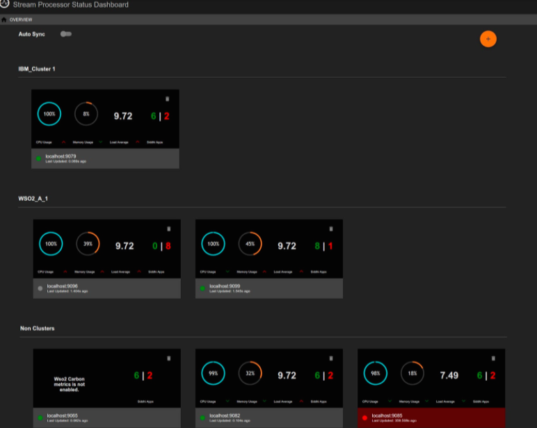
If no nodes are displayed, add the nodes for which you wnt to view statistics by following the steps in Adding a node to the dashboard.
Node overview¶
Once you login to the status dashboard, the nodes that are already added to the Status Dashboard are displayed as shown in the following example:
Adding a node to the dashboard¶
If no nodes are displayed, you can add the nodes for which you want to view the status by following the procedure below:
-
Click ADD NEW NODE.
This opens the following dialog box.
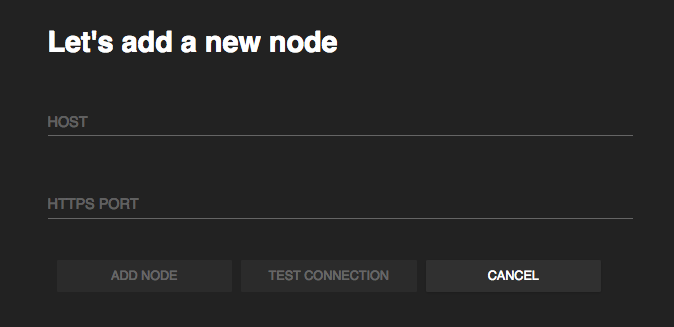
-
Enter the following information in the dialog box and click ADD NODE to add a gadget for the required node in the Node Overview page.
-
In the Host parameter, enter the host ID of the node you want to add.
-
In the Port parameter, enter the port number of the node you want to add.
-
-
If the node you added is currently unreachable, the following dialog box is displayed.
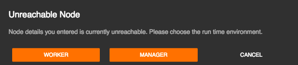
Click either WORKER or MANAGER. If you click WORKER, the node is displayed under Never Reached. If you click Manager , the node is displayed under Distributed Deployments as shown below.
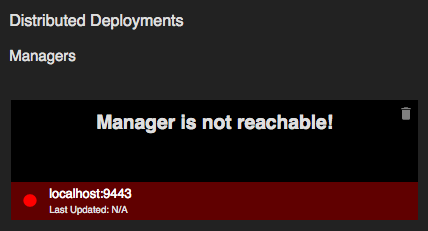
Info
The following basic details are displayed for each node.
- CPU Usage : The CPU resources consumed by the Streaming Integrator node out of the available CPU resources in the machine in which it is deployed is expressed as a percentage.
- Memory Usage : The memory consumed by the node as a percentage of the total memory available in the system.
- Load Average :
- Siddhi Apps : The total number of Siddhi applications deployed in the node.
Viewing status details¶
The following is a list of sections displayed in the Node Overview page to provide information relating to the status of the nodes.
Distributed Deployments
| View (Example) | 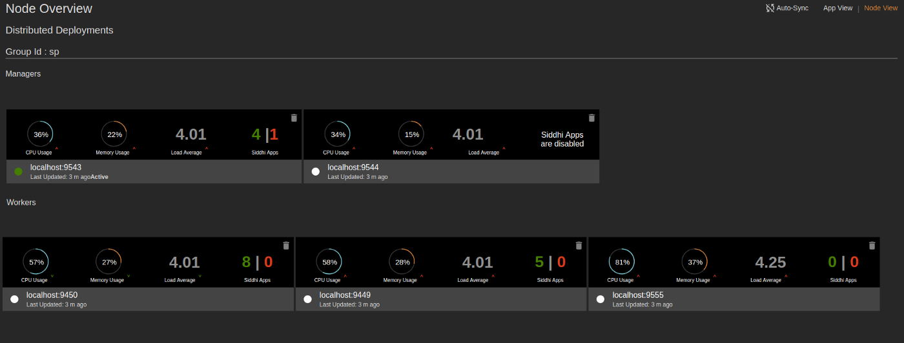 |
| Description | The nodes that are connected in the distributed deployment are displayed under the relevant group ID in the status dashboard (e.g., Managers : The active manager node in the cluster is indicated by a green dot that is displayed with the host name and the port of the node. Similarly, a grey dot is displayed for passive manager nodes in the cluster. Workers : When you add an active manager node, it automatically retrieves the worker node details that are connected with that particular deployment. If the worker node is already registered in the Status Dashboard, you can view the metrics of that node as follows: |
| Purpose |
|
| Recommended Action |
|
Clustered nodes
| View (Example) | 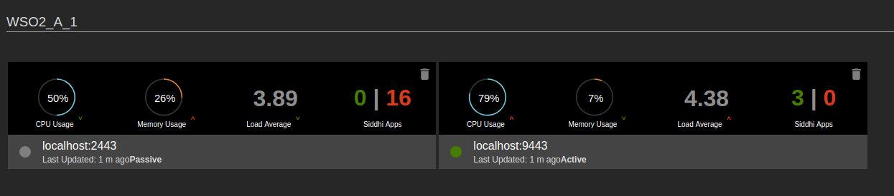 |
| Description | The nodes that are clustered together in a high-availability deployment are displayed under the relevant cluster ID in the Status Dashboard (e.g., under |
| Purpose | This allows you to determine the following:
|
| Recommended Action |
|
Single nodes
| View (Example) | 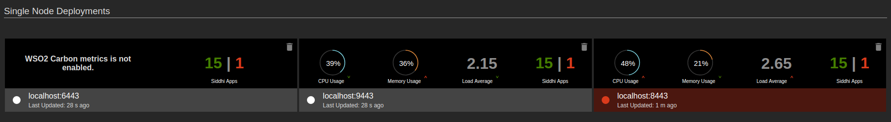 |
| Description | This section displays statistics for Streaming Integrator servers that operate as single node setups. |
| Purpose | This allows you to compare the performance of single nodes agaisnt each other. |
| Recommended Action |
|
Nodes that cannot be reached
| View (Example) | 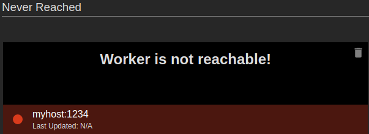 |
| Description | When a node is newly added to the Status dashboard and it is unavailable, it is displayed as shown in the above examples. |
| Purpose | This allows you to identify nodes that cannot be reached at specific hosts and ports. |
| Recommended Action |
|
Nodes that are currently unavailable
| View (Example) | 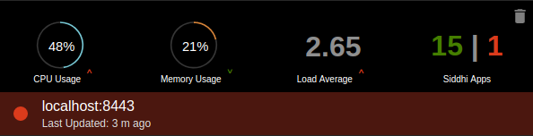 |
| Description | When a node that could be viewed previously is no longer available, its status is displayed in red as shown in the example above. The status displayed for such nodes is applicable for the last time at which the node had been reachable. |
| Purpose | This allows you to identify previously available nodes that have become unreachable. |
| Recommended Action |
|
Nodes for which metrics is disabled
| View (Example) | 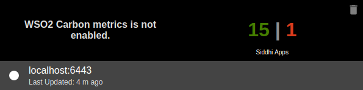 |
| Description | When a node for which metrics is disabled is added to the Status dashboard, you can view the number of active and inactive Siddhi applications deployed in it. However, you cannot view the CPU usage, memory usage and the load average. |
| Purpose | This allows you to identify nodes for which metrics is not enabled. |
| Recommended Action | Enable metrics for the required nodes to view statistics about their status in the Status Dashboard. For instructions to enable metrics, see Monitoring the Stream Processor - Configuring the Status Dashboard . |
Nodes with JMX reporting disabled
| View (Example) | 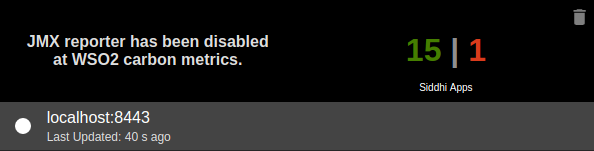 |
| Description | When a node with JMX reporting disabled is added to the Status dashboard, you can view the number of active and inactive Siddhi applications deployed in it. However, you cannot view the CPU usage, memory usage and the load average. |
| Purpose | This allows you to identify nodes for which JMX reporting is disabled |
| Recommended Action | Enable JMX reporting for the required nodes to view statistics about their status in the Status Dashboard. For instructions to enable JMX reporting, see Monitoring the Stream Processor - Configuring the Status Dashboard . |
Statistics trends
| View (Example) | 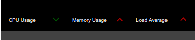 |
| Description | This dispalys the change that has taken taken place in the CPU usage, memory usage and the load average of nodes since the status was last viewed in the status dashboard. Positive changes are indicated in green (e.g., a decrease in the CPU usage in the above example), and egative changes are indicated in red (an increase in the memory usage and the load average in the above example). |
| Purpose | This allows you to view a summary of the performance trends of your Streaming Integrator clusters and single nodes. |
| Recommended Action | Based on the performance trend observed, add more resources to your Streaming Integrator clusters/single nodes to handle more events, or shutdown one or more nodes if there is excess resources. |
Viewing node-specific pages¶
When you open the Status Dashboard, the Node Overview page is displayed by default. To view information specific to a selected worker node, click on the relevant widget. This opens a separate page for the worker node as shown in the example below.
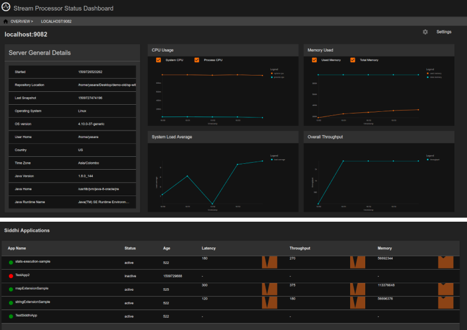
Status indicators¶
The following gadgets can be viewed for the selected worker.
Server General Details
| View (Example) | 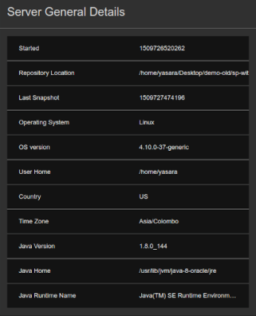 |
| Description | This gadget displays general information relating to the selected worker node. |
| Purpose | This allows you to understand the distribution of nodes in terms of the location, the time zone, operating system used etc., and to locate them. |
| Recommended Action | In a distributed set up, you can use this information to evaluate the clustered setup and make changes to optimize the benefits of deploying the Streaming Integrator as a cluster (e.g., making them physically available in different locations to minimize the risk of all the nodes failing at the same time etc.). |
CPU Usage
| View (Example) | 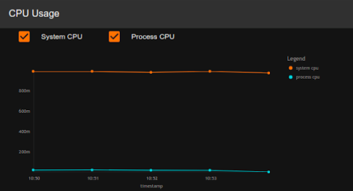
|
| Description | This displays the CPU usage of the selected node. |
| Purpose | This allows you to observe the CPU usage of a selected node over time. |
| Recommended Action |
|
Memory Used
| View (Example) |
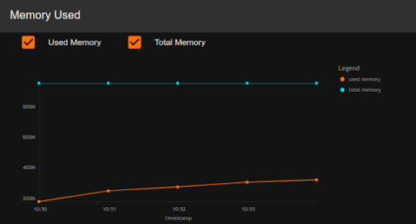 |
| Description | This displays the memory usage of the selected node. |
| Purpose | This allows you to observe the memory usage of a selected node over time. |
| Recommended Action |
|
System Load Average
| View (Example) |
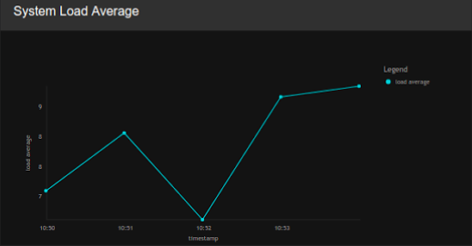 |
| Description | This displays the system load average for the selected node. |
| Purpose | This allows you to observe the system load of the node over time. |
| Recommended Action | Observe the trends of the node's system load, and adjust the allocation of resources (e.g., memory) and work load (i.e., the number of Siddhi applications deployed) accordingly. |
Overall Throughput
| View (Example) |
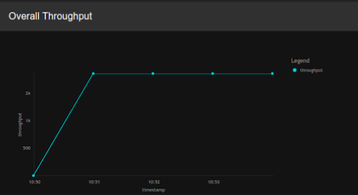 |
| Description | This displays the overall throughput of the selected node. |
| Purpose | This allows you to assess the performance of the selected node in terms of the throughput over time. |
| Recommended Action |
|
Siddhi Applications
| View (Example) |
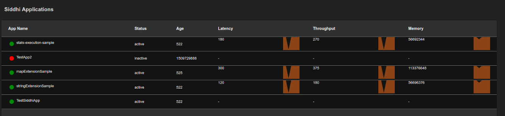 |
| Description | This table displays the complete list of Siddhi applications deployed in the selected node. The status is displayed in green for active Siddhi applications, and in red for inactive Siddhi applications. In addition, the following is displayed for each Siddhi application:
|
| Purpose | This allows you to assess the performance of each Siddhi application deployed in the selected node. |
| Recommended Action |
|
Viewing worker history¶
This section explains how to view statistics relating to the performance of a selected node for a specific time interval.
-
Log in to the Status Dashboard.
-
In the Node Overview page, click on the required node to view information specific to that node.
-
In the page displayed with node-specific information, click one of the following gadgets to open the Metrics page.
-
CPU Usage
-
Memory Used
-
System Load Average
-
Overall Throughput
-
-
In the Metrics page, click the required time interval. Then the page displays statistics relating to the performance of the selected node applicable to that time period.
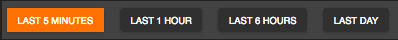
-
If you want to view more details, click More Details.
As a result, the following additional information is displayed for the node for the selected time period.
-
CPU Usage
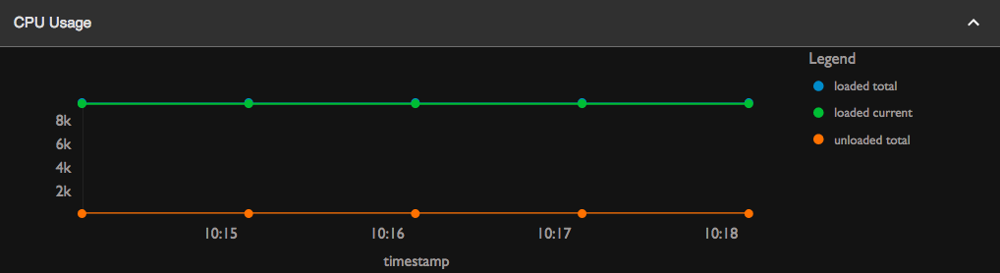
-
JVM OS as CPU
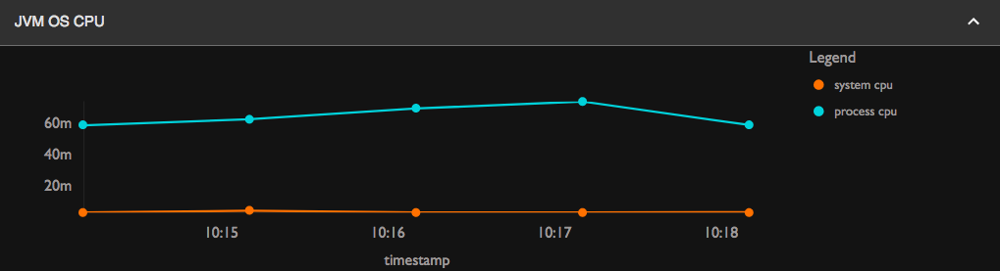
-
JVM Physical Memory
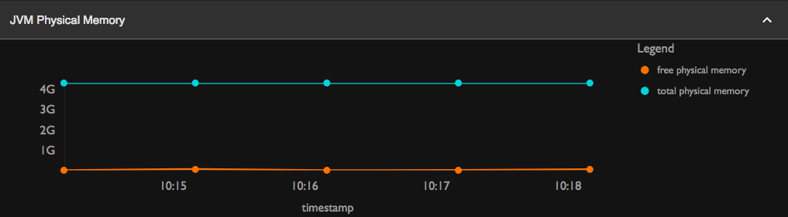
-
JVM Threads
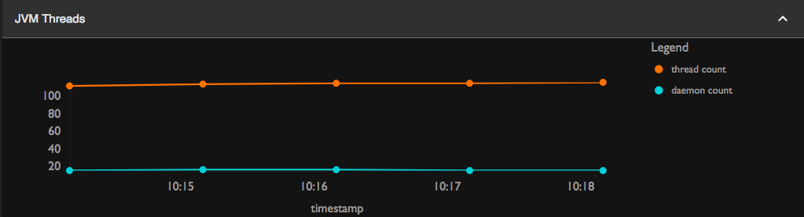
-
JVM Swap Space
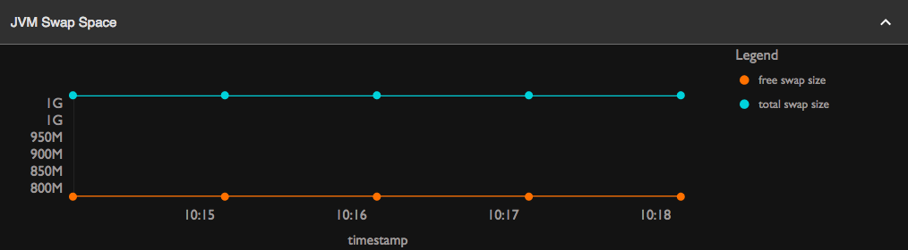
-
Viewing statistics for Siddhi applications¶
When you open the WSO2 Status Dashboard, the Node Overview page is displayed by default.
-
To view information specific to a selected worker node, click on the relevant gadget. This opens the page specific to the worker.
-
To view information specific to a Siddhi application deployed in the Siddhi node, click on the relevant Siddhi application in the Siddhi Applications table. This opens a page with information specific to the selected Siddhi application as shown in the example below.
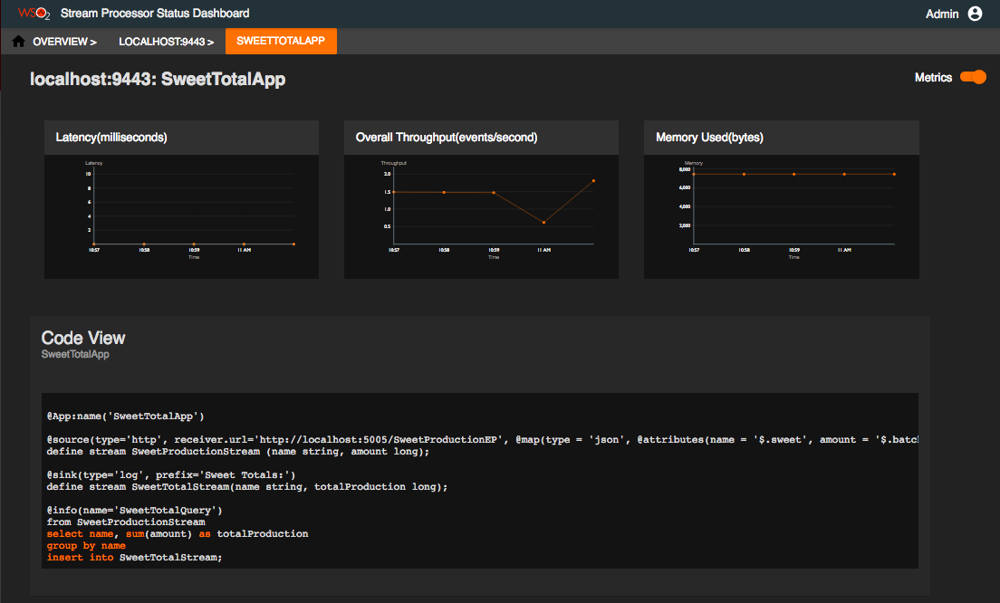
The following statistics can be viewed for an individual Siddhi Application.
Latency
| View (Example) | 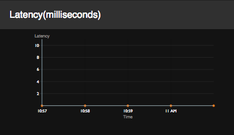 |
| Description | This displays the latency of the selected Siddhi application. Latency is the time taken to complete processing a single event in the event flow. |
| Purpose | This allows you to assess the performance of the selected Siddhi application. |
| Recommended Action | If the latency of the Siddhi application is too high, check the Siddhi queries and rewrite them to optimise performance. |
Overall Throughput
| View (Example) | 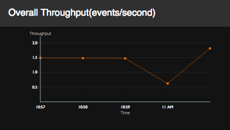 |
| Description | This shows the overall throughput of a selected Siddhi application over time. |
| Purpose | This allows you to assess the performance of the selected Siddhi application. |
| Recommended Action |
|
Memory Used
| View (Example) | 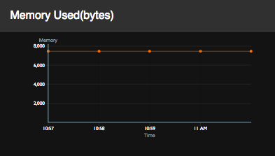 |
| Description | This displays the memory usage (In MB) of a selected Siddhi application over time. |
| Purpose | This allows you to monitor the memory consumption of individual Siddhi applications. |
| Recommended Action | If there are major fluctuations in the memory consumption of a Siddhi application, investigate the reasons (e.g., Whether the Siddhi application has been inactive at any point of time). |
Code View
| View (Example) | 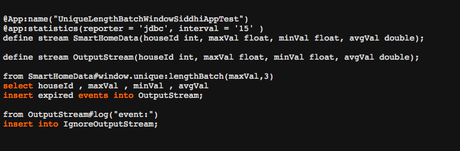 |
| Description | This displays the queries defined in the Siddhi file of the application. |
| Purpose | This allows you to check the queries of the Siddhi application if any further investigations are needed based on the observations of its latency, throughput and the memory consumption. |
| Recommended Action | Edit the Siddhi file if any changes that can improve the performance of the Siddhi application are identified.
|
Design View
| View (Example) | 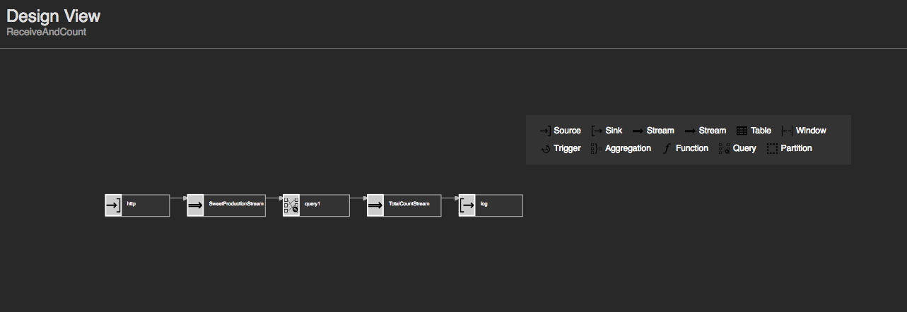 |
| Description | This displays the graphical view for queries defined in the Siddhi file of the application. |
| Purpose | This allows you to check the flow of the queries of the Siddhi application in the graphical way. |
| Recommended Action | Edit the Siddhi file if any changes that can improve the performance of the Siddhi application are identified. |
Siddhi App Component Statistics
| View (Example) | 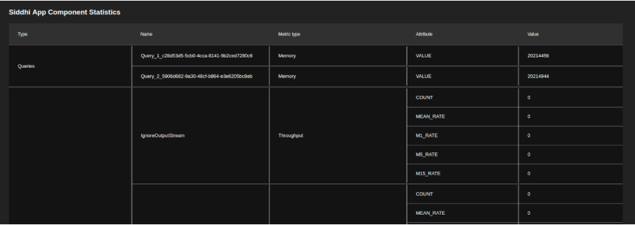 |
| Description | This table displays performance statistics related to dfferent components within a selected Siddhi application (e.g., queries). The columns displayed are as follows:
|
| Purpose | This allows you to carry out a detailed analysis of the performance of a selected Siddhi application and identify components that have a negative impact on the overall performance of the Siddhi application. |
| Recommended Action | Identify the componets in a Siddhi application that have a negative impact on the performance, and rewrite them to improve performance. To understand Siddhi concepts in order to rewrite the components, see the Siddhi Query Guide . |
Viewing statistics for parent Siddhi applications¶
When you open the WSO2 Status Dashboard, the Node Overview page is displayed by default. To view information specific to an active manager, click on the required active manager node in the Distributed Deployments section. This opens a page with parent Siddhi applications deployed in that manager node as shown in the example below.
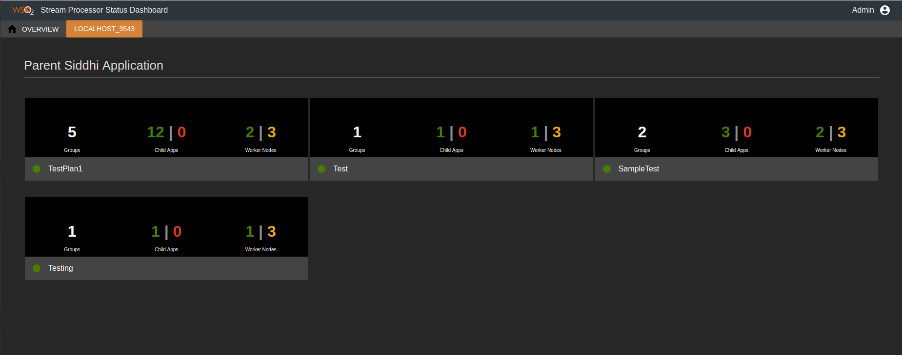
This page provides a summary of information relating to each parent Siddhi application as described in the table below. If a parent Siddhi application is active, it is indicated with a green dot that appears before the name of the Siddhi application. Similarly, an orange dot is displayed for inactive parent Siddhi applications.
| Detail | Description |
|---|---|
| Groups | This indicates the number of execution groups of the parent Siddhi application. In the above example, the Testing Siddhi application has only one execution group. |
| Child Apps | This indicates the number of child applications of the parent Siddhi application. The number of active child applications is displayed in green, and the number of inactive child applications are displayed in red. |
| Worker Nodes | The number displayed in yellow indicates the total number of worker nodes in the resource cluster. In the above example, there are two worker nodes in the cluster. The number displayed in green indicates the number of worker nodes in which the Siddhi application is deployed. In the above example, the |
If you click on a parent Siddhi application, detailed information is displayed as shown below.
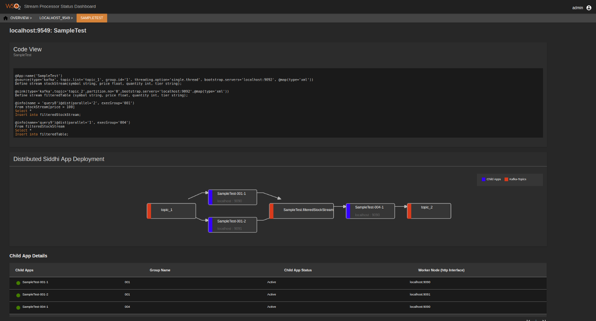
The following are the widgets displayed.
Code View
| View (Example) | 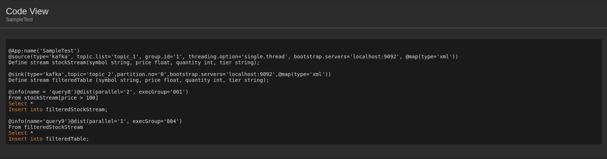 |
| Description | This displays the queries defined in the Parent Siddhi file of the application. This allows you to check the queries of the Siddhi application if any further investigations are needed based on the kafka diagrams and performance. For detailed information about the Siddhi logic, see the Siddhi Query Guide . |
| Purpose | This allows you to check the queries of the Siddhi application if any further investigations are needed based on the observations of the performance of the distributed cluster to which it belongs. |
| Recommended Action | Edit the Siddhi file if any changes that can improve the performance of the Siddhi application are identified. |
Distributed Siddhi App Deployment
| View (Example) | 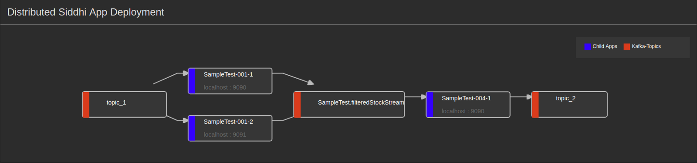 |
| Description | This is a graphical representation of how Kafka topics are connected to the child Siddhi applications of the selected parent Siddhi application. Kafka topics are represented by boxes with red margins, and the child applications are represented by boxes with blue margins. |
| Purpose | This is displayed for you to understand how the flow of information takes place. |
Child App Details
| View (Example) | 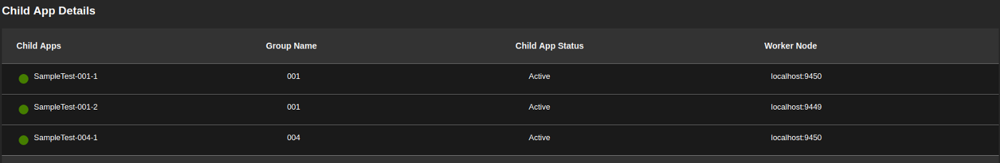 |
| Description | This table displays the complete list of child Siddhi applications of the selected parent Siddhi application. The status is displayed in green for active Siddhi applications, and in red for inactive Siddhi applications. In addition, the following is displayed for each Siddhi application:
|
| Purpose | To identify the currently active child applications. |
Application overview¶
When you open the WSO2 Status Dashboard, the Node Overview page is displayed by default. If you want to view all the Siddhi applications deployed in your Streaming Integrator setup, click on the App View tab (marked in the image below). The App Overview tab opens and all the Siddhi applications that are currently deployed are displayed as shown in the image below.
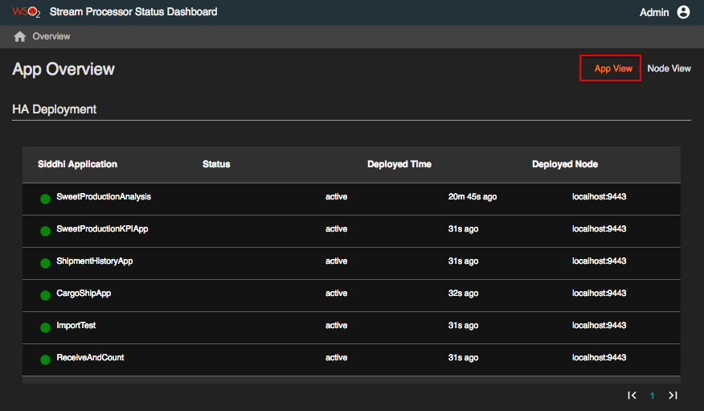
The status is displayed in green for active Siddhi applications, and in red for inactive Siddhi applications.
If no Siddhi applications are deployed in your Streaming Integrator setup, the following message is displayed.
The Siddhi applications are listed under the deployment mode in which they are deployed (i.e., Single Node Deployment, HA Deployment, and Scalable Deployment).
The following information is displayed for each Siddhi application.
-
Siddhi Application: The name of the Siddhi application.
-
Status: This indicates whether the Siddhi application is currently active or inactive.
-
Deployed Time: The time duration that has elapsed since the Siddhi application was deployed in the Streaming Integrator setup.
-
Deployed Node: The host and the port of the Streaming Integrator node in which the Siddhi application is displayed.
The purpose of this tab is to check the status of all the Siddhi applications that are currently deployed in the Streaming Integrator setup.
If you click on a Siddhi Application under Single Node Deployment or HA Deployment, information specific to that Siddhi application is displayed as explained in Viewing Statistics for Siddhi Applications.
If you click on the parent Siddhi application under Distributed Deployment, information specific to that parent Siddhi application is displayed as explained in Viewing Statistics for Parent Siddhi Applications.
If you click on a deployed node, information specific to that node is displayed as explained in Viewing Node-specific Pages.
Top